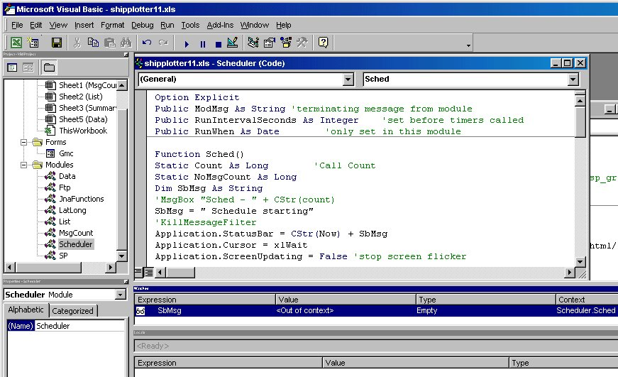

ShipPlotter AIS Data Reception Analysis &
Website Upload Spreadsheet/Program
ShipPlotter.xls VBA Guide by Neal
Arundale
In course of preparation
VBA
Introduction
Why VBA ?
The programs I have seen to extract the data from the ShipPlotter
program into spreadsheets use VBScript to write out a file which is
then imported into a spreadsheet, or the script writes the data
directly into a spreadsheet..
Visual Basic (VB) comes in three flavours. VBS is basically a subset of
VB whereas VBA has almost all of the features of VB plus
access to the components of the host application. As my end goal was to
graphically display message rate, number of ships and maximum range, it
made sense to use VBA rather than VBS. A side benefit was the ability
of VBA to reschedule itself at a time in the future, whereas VBS only
has a weak wait function and so requires setting up as a scheduled
task. In addition the debugging features in VBS are
minimal but VBA comes with a good debugging editor (VBE).
Visual Basic Editor
First stop the
scheduler
, if you don't you may
get an unexpected copy of Excel startup later.
You only need to install VBE if you want to change the VBA
code.
With Excel 97/2000 installing VBE is an option when Excel
is installed (I don't know about later versions).
When invoked by Tools > Macro > Visual Basic Editor (when
in Excel) you should see a screen something like

If you wish to change the format or data reported on I suggest you
create a new module & worksheet (even if you copy an existing
one), you can keep a separate
copy of your module by exporting it. If I change the existing
code to fix bugs etc, you
will simply be able to import your code module and eveything will
continue to work ok.
As my initial interest was to display the message rate etc graphically,
this is where most of my effort has been spent, the other sheets I've
done were mainly to demonstrate the feasability of the techniques
employed rather than to produce relevant data. I've also used more than
one method of achieving the same end result for the same reason.